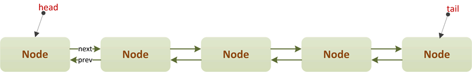

Java多线程进阶（三十）—— J.U.C之collections框架：ConcurrentLinkedDeque
一、引言
在开始讲ConcurrentLinkedDeque之前，我们先来了解下Deque这种数据结构，我们知道Queue是一种具有FIFO特点的数据结构，元素只能在队首进行“入队”操作，在队尾进行“出队”操作。
而Deque（double-ended queue）是一种双端队列，也就是说可以在任意一端进行“入队”，也可以在任意一端进行“出队”：
Deque的数据结构示意图如下：
我们再来看下JDK中Queue和Deque这两种数据结构的接口定义，看看Deque和Queue相比有哪些增强：
1.1 Queue接口定义
Queue的接口非常简单，一共只有三种类型的操作：入队、出队、读取。
上述方法，可以划分如下：
| 操作类型 | 抛出异常 | 返回特殊值 |
|---|---|---|
| 入队 | add(e) | offer(e) |
| 出队 | remove() | poll() |
| 读取 | element() | peek() |
每种操作类型，都给出了两种方法，区别就是其中一种操作在队列的状态不满足某些要求时，会抛出异常；另一种，则直接返回特殊值（如null）。
1.2 Deque接口定义
Queue接口的所有方法Deque都具备，只不过队首/队尾都可以进行“出队”和“入队”操作：
| 操作类型 | 抛出异常 | 返回特殊值 |
|---|---|---|
| 队首入队 | addFirst(e) | offerFirst(e) |
| 队首出队 | removeFirst() | pollFirst() |
| 队首读取 | getFirst() | peekFirst() |
| 队尾入队 | addLast(e) | offerLast(e) |
| 队尾出队 | removeLast() | pollLast() |
| 队尾读取 | getLast() | peekLast() |
除此之外，Deque还可以当作“栈”来使用，我们知道“栈”是一种具有“LIFO”特点的数据结构（关于栈，可以参考我的这篇博文：栈），Deque提供了push、pop、peek这三个栈方法，一般实现这三个方法时，可以利用已有方法，即有如下映射关系：
| 栈方法 | Deque方法 |
|---|---|
| push | addFirst(e) |
| pop | removeFirst() |
| peek | peekFirst() |
关于Deque接口的更多细节，读者可以参考Oracle的官方文档：https://docs.oracle.com/javase/8/docs/api/
二、ConcurrentLinkedDeque简介
ConcurrentLinkedDeque是JDK1.7时，J.U.C包引入的一个集合工具类。在JDK1.7之前，除了Stack类外，并没有其它适合并发环境的“栈”数据结构。ConcurrentLinkedDeque作为双端队列，可以当作“栈”来使用，并且高效地支持并发环境。
ConcurrentLinkedDequ和ConcurrentLinkedQueue一样，采用了无锁算法，底层基于自旋+CAS的方式实现。

三、ConcurrentLinkedDeque原理
3.1 队列结构
我们先来看下ConcurrentLinkedDeque的内部结构：
public class ConcurrentLinkedDeque<E> extends AbstractCollection<E>
implements Deque<E>, java.io.Serializable {
/**
* 头指针
*/
private transient volatile Node<E> head;
/**
* 尾指针
*/
private transient volatile Node<E> tail;
private static final Node<Object> PREV_TERMINATOR, NEXT_TERMINATOR;
// Unsafe mechanics
private static final sun.misc.Unsafe UNSAFE;
private static final long headOffset;
private static final long tailOffset;
static {
PREV_TERMINATOR = new Node<Object>();
PREV_TERMINATOR.next = PREV_TERMINATOR;
NEXT_TERMINATOR = new Node<Object>();
NEXT_TERMINATOR.prev = NEXT_TERMINATOR;
try {
UNSAFE = sun.misc.Unsafe.getUnsafe();
Class<?> k = ConcurrentLinkedDeque.class;
headOffset = UNSAFE.objectFieldOffset(k.getDeclaredField("head"));
tailOffset = UNSAFE.objectFieldOffset(k.getDeclaredField("tail"));
} catch (Exception e) {
throw new Error(e);
}
}
/**
* 双链表结点定义
*/
static final class Node<E> {
volatile Node<E> prev; // 前驱指针
volatile E item; // 结点值
volatile Node<E> next; // 后驱指针
Node() {
}
Node(E item) {
UNSAFE.putObject(this, itemOffset, item);
}
boolean casItem(E cmp, E val) {
return UNSAFE.compareAndSwapObject(this, itemOffset, cmp, val);
}
void lazySetNext(Node<E> val) {
UNSAFE.putOrderedObject(this, nextOffset, val);
}
boolean casNext(Node<E> cmp, Node<E> val) {
return UNSAFE.compareAndSwapObject(this, nextOffset, cmp, val);
}
void lazySetPrev(Node<E> val) {
UNSAFE.putOrderedObject(this, prevOffset, val);
}
boolean casPrev(Node<E> cmp, Node<E> val) {
return UNSAFE.compareAndSwapObject(this, prevOffset, cmp, val);
}
// Unsafe mechanics
private static final sun.misc.Unsafe UNSAFE;
private static final long prevOffset;
private static final long itemOffset;
private static final long nextOffset;
static {
try {
UNSAFE = sun.misc.Unsafe.getUnsafe();
Class<?> k = Node.class;
prevOffset = UNSAFE.objectFieldOffset(k.getDeclaredField("prev"));
itemOffset = UNSAFE.objectFieldOffset(k.getDeclaredField("item"));
nextOffset = UNSAFE.objectFieldOffset(k.getDeclaredField("next"));
} catch (Exception e) {
throw new Error(e);
}
}
}
// ...
}
可以看到，ConcurrentLinkedDeque的内部和ConcurrentLinkedQueue类似，不过是一个双链表结构，每入队一个元素就是插入一个Node类型的结点。字段head指向队列头，tail指向队列尾，通过Unsafe来CAS操作字段值以及Node对象的字段值。

需要特别注意的是ConcurrentLinkedDeque包含两个特殊字段：PREV_TERMINATOR、NEXT_TERMINATOR。
这两个字段初始时都指向一个值为null的空结点，这两个字段在结点删除时使用，后面会详细介绍：

3.2 构造器定义
ConcurrentLinkedDeque包含两种构造器：
/**
* 空构造器.
*/
public ConcurrentLinkedDeque() {
head = tail = new Node<E>(null);
}
/**
* 从已有集合，构造队列
*/
public ConcurrentLinkedDeque(Collection<? extends E> c) {
Node<E> h = null, t = null;
for (E e : c) {
checkNotNull(e);
Node<E> newNode = new Node<E>(e);
if (h == null)
h = t = newNode;
else { // 在队尾插入元素
t.lazySetNext(newNode);
newNode.lazySetPrev(t);
t = newNode;
}
}
initHeadTail(h, t);
}
我们重点看下空构造器，通过空构造器建立的ConcurrentLinkedDeque对象，其head和tail指针并非指向null，而是指向一个item值为null的Node结点——哨兵结点，如下图：

3.3 入队操作
双端队列与普通队列的入队区别是：双端队列既可以在“队尾”插入元素，也可以在“队首”插入元素。ConcurrentLinkedDeque的入队方法有很多：addFirst(e)、addLast(e)、offerFirst(e)、offerLast(e)：
public void addFirst(E e) {
linkFirst(e);
}
public void addLast(E e) {
linkLast(e);
}
public boolean offerFirst(E e) {
linkFirst(e);
return true;
}
public boolean offerLast(E e) {
linkLast(e);
return true;
}
可以看到，队首“入队”其实就是调用了linkFirst(e)方法，而队尾“入队”是调用了 linkLast(e)方法。我们先来看下队首“入队”——linkFirst(e)：
/**
* 在队首插入一个元素.
*/
private void linkFirst(E e) {
checkNotNull(e);
final Node<E> newNode = new Node<E>(e); // 创建待插入的结点
restartFromHead:
for (; ; )
for (Node<E> h = head, p = h, q; ; ) {
if ((q = p.prev) != null && (q = (p = q).prev) != null)
// Check for head updates every other hop.
// If p == q, we are sure to follow head instead.
p = (h != (h = head)) ? h : q;
else if (p.next == p) // PREV_TERMINATOR
continue restartFromHead;
else {
// p is first node
newNode.lazySetNext(p); // CAS piggyback
if (p.casPrev(null, newNode)) {
// Successful CAS is the linearization point
// for e to become an element of this deque,
// and for newNode to become "live".
if (p != h) // hop two nodes at a time
casHead(h, newNode); // Failure is OK.
return;
}
// Lost CAS race to another thread; re-read prev
}
}
}
为了便于理解，我们以示例来看：假设有两个线程ThreadA和ThreadB同时进行入队操作。
①ThreadA先单独入队一个元素9
此时，ThreadA会执行CASE3分支：
else { // CASE3: p是队首结点
newNode.lazySetNext(p); // “新结点”的next指向队首结点
if (p.casPrev(null, newNode)) { // 队首结点的prev指针指向“新结点”
if (p != h) // hop two nodes at a time
casHead(h, newNode); // Failure is OK.
return;
}
// 执行到此处说明CAS操作失败，有其它线程也在队首插入元素
}
队列的结构如下：
②ThreadA入队一个元素2，同时ThreadB入队一个元素10
此时，依然执行CASE3分支，我们假设ThreadA操作成功，ThreadB操作失败：
else { // CASE3: p是队首结点
newNode.lazySetNext(p); // “新结点”的next指向队首结点
if (p.casPrev(null, newNode)) { // 队首结点的prev指针指向“新结点”
if (p != h) // hop two nodes at a time
casHead(h, newNode); // Failure is OK.
return;
}
// 执行到此处说明CAS操作失败，有其它线程也在队首插入元素
}
ThreadA的CAS操作成功后，会进入以下判断：
if (p != h) // hop two nodes at a time
casHead(h, newNode); // Failure is OK.
上述判断的作用就是重置head头指针，可以看到，ConcurrentLinkedDeque其实是以每次跳2个结点的方式移动指针，这主要考虑到并发环境以这种hop跳的方式可以提升效率。
此时队列的机构如下：
注意，此时ThreadB的p.casPrev(null, newNode)操作失败了，所以会进入下一次自旋，在下一次自旋中继续进入CASE3。如果ThreadA的casHead操作没有完成，ThreadB就进入了下一次自旋，则会进入分支1，重置指针p指向队首。最终队列结构如下：
在队尾插入元素和队首类似，不再赘述，读者可以自己阅读源码。
3.4 出队操作
ConcurrentLinkedDeque的出队一样分为队首、队尾两种情况：removeFirst()、pollFirst()、removeLast()、pollLast()。
public E removeFirst() {
return screenNullResult(pollFirst());
}
public E removeLast() {
return screenNullResult(pollLast());
}
public E pollFirst() {
for (Node<E> p = first(); p != null; p = succ(p)) {
E item = p.item;
if (item != null && p.casItem(item, null)) {
unlink(p);
return item;
}
}
return null;
}
public E pollLast() {
for (Node<E> p = last(); p != null; p = pred(p)) {
E item = p.item;
if (item != null && p.casItem(item, null)) {
unlink(p);
return item;
}
}
return null;
}
可以看到，两个remove方法其实内部都调用了对应的poll方法，我们重点看下队尾的“出队”——pollLast方法：
public E pollLast() {
for (Node<E> p = last(); p != null; p = pred(p)) {
E item = p.item;
if (item != null && p.casItem(item, null)) {
unlink(p);
return item;
}
}
return null;
}
last方法用于寻找队尾结点，即满足p.next == null && p.prev != p的结点：
Node<E> last() {
restartFromTail:
for (; ; )
for (Node<E> t = tail, p = t, q; ; ) {
if ((q = p.next) != null &&
(q = (p = q).next) != null)
// Check for tail updates every other hop.
// If p == q, we are sure to follow tail instead.
p = (t != (t = tail)) ? t : q;
else if (p == t
// It is possible that p is NEXT_TERMINATOR,
// but if so, the CAS is guaranteed to fail.
|| casTail(t, p))
return p;
else
continue restartFromTail;
}
}
pred方法用于寻找当前结点的前驱结点（如果前驱是自身，则返回队尾结点）：
final Node<E> pred(Node<E> p) {
Node<E> q = p.prev;
return (p == q) ? last() : q;
}
unlink方法断开结点的链接：
/**
* Unlinks non-null node x.
*/
void unlink(Node<E> x) {
// assert x != null;
// assert x.item == null;
// assert x != PREV_TERMINATOR;
// assert x != NEXT_TERMINATOR;
final Node<E> prev = x.prev;
final Node<E> next = x.next;
if (prev == null) {
unlinkFirst(x, next);
} else if (next == null) {
unlinkLast(x, prev);
} else {
Node<E> activePred, activeSucc;
boolean isFirst, isLast;
int hops = 1;
// Find active predecessor
for (Node<E> p = prev; ; ++hops) {
if (p.item != null) {
activePred = p;
isFirst = false;
break;
}
Node<E> q = p.prev;
if (q == null) {
if (p.next == p)
return;
activePred = p;
isFirst = true;
break;
} else if (p == q)
return;
else
p = q;
}
// Find active successor
for (Node<E> p = next; ; ++hops) {
if (p.item != null) {
activeSucc = p;
isLast = false;
break;
}
Node<E> q = p.next;
if (q == null) {
if (p.prev == p)
return;
activeSucc = p;
isLast = true;
break;
} else if (p == q)
return;
else
p = q;
}
// TODO: better HOP heuristics
if (hops < HOPS
// always squeeze out interior deleted nodes
&& (isFirst | isLast))
return;
// Squeeze out deleted nodes between activePred and
// activeSucc, including x.
skipDeletedSuccessors(activePred);
skipDeletedPredecessors(activeSucc);
// Try to gc-unlink, if possible
if ((isFirst | isLast) &&
// Recheck expected state of predecessor and successor
(activePred.next == activeSucc) &&
(activeSucc.prev == activePred) &&
(isFirst ? activePred.prev == null : activePred.item != null) &&
(isLast ? activeSucc.next == null : activeSucc.item != null)) {
updateHead(); // Ensure x is not reachable from head
updateTail(); // Ensure x is not reachable from tail
// Finally, actually gc-unlink
x.lazySetPrev(isFirst ? prevTerminator() : x);
x.lazySetNext(isLast ? nextTerminator() : x);
}
}
}
ConcurrentLinkedDeque相比ConcurrentLinkedQueue，功能更丰富，但是由于底层结构是双链表，且完全采用CAS+自旋的无锁算法保证线程安全性，所以需要考虑各种并发情况，源码比ConcurrentLinkedQueue更加难懂，留待有精力作进一步分析。
四、总结
ConcurrentLinkedDeque使用了自旋+CAS的非阻塞算法来保证线程并发访问时的数据一致性。由于队列本身是一种双链表结构，所以虽然算法看起来很简单，但其实需要考虑各种并发的情况，实现复杂度较高，并且ConcurrentLinkedDeque不具备实时的数据一致性，实际运用中，如果需要一种线程安全的栈结构，可以使用ConcurrentLinkedDeque。
另外，关于ConcurrentLinkedDeque还有以下需要注意的几点：
ConcurrentLinkedDeque的迭代器是弱一致性的，这在并发容器中是比较普遍的现象，主要是指在一个线程在遍历队列结点而另一个线程尝试对某个队列结点进行修改的话不会抛出ConcurrentModificationException，这也就造成在遍历某个尚未被修改的结点时，在next方法返回时可以看到该结点的修改，但在遍历后再对该结点修改时就看不到这种变化。
size方法需要遍历链表，所以在并发情况下，其结果不一定是准确的，只能供参考。